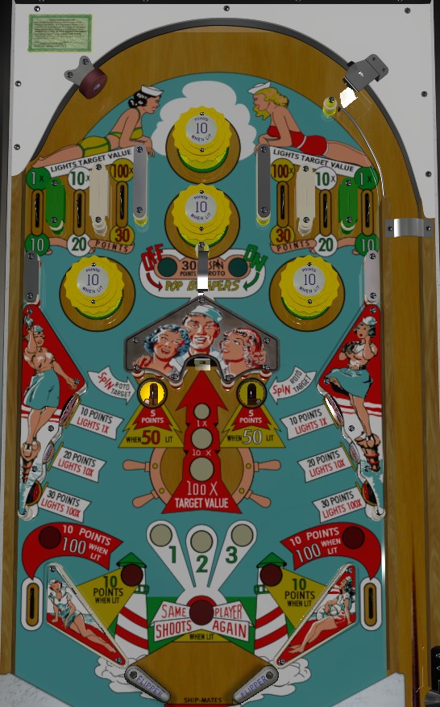

The top lanes and lower left and right standup targets award 10, 20, or 30 points. Any 10-point lane or target lights 1x at the center roto; 20-point lanes or targets light 10x at the center roto; 30-point lanes or targets light 100x at the center roto. The roto-target is spun every time the sideways gate in the middle of the playfield is triggered over every time a center saucer is made. The roto-target scores 1, 2, or 3 points, depending on which number is on the visible face, times the multiplier that was selected by the most recent 10, 20, or 30 points target/lane. Hitting the roto-target also lights the number on the playfield corresponding to the number on the roto-target; lighting 1-2-3 in this way awards an extra ball. Progress on this 1-2-3 is held over across players and games.
Alternating features: pop bumpers (top & right vs center & left, score 1 point or 10 when lit), center saucers (5 points or 50 when lit), slingshots (1 point or 10 when lit), out lanes (10 points or 100 when lit) all alternate each time any 1-point switch is scored anywhere in the game. The center gate is labelled as being able to turn the pop bumpers on or off, but it seems that no matter what there are always exactly 2 bumpers lit.
